開場：為什麼這一年叫「蔗裡有糖」
星巴克典藏 保安門市前｜活動開場
導覽從門口的人行道直接開始，每位參加者都戴上無線導覽耳機，即使在街邊也能清楚聽到解說。老師先交代一件事：為什麼臺灣新文化運動紀念館會帶大家來看一位「鳳梨大王」？
- 1921 年蔣渭水等人成立臺灣文化協會。當時識字率不高，傳單、報紙效果有限，文協便在全臺各地辦演講會，「用說的」傳播新思想；高峰期（1925–26 年）一年有三百多場。
- 1925 年發生臺灣第一個蔗農抗爭運動。蔗農種甘蔗、交給製糖會社過磅，價格全由會社決定，才有了那句台語俗諺「第一憨，種甘蔗給會社磅」。
- 因此今年的新文化運動月以「蔗裡有糖」為題；甘蔗與糖業，和等一下要親手做的鳳梨果醬，剛好是同一條甜味的脈絡。（2021 年的主題則是文協成立 100 週年。）
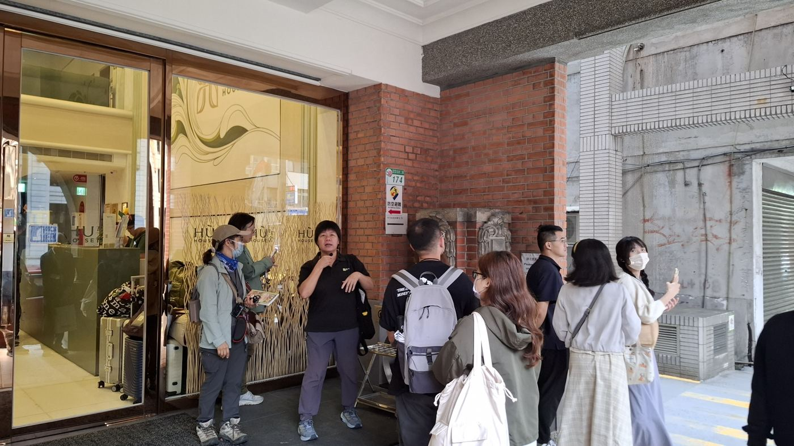
回廊與立面：葉金塗宅，只剩這一面是「真的」
保安街・重慶北路口｜約 14:05–14:15
走進導覽的第一個重點，就是我們腳下這段紅磚回廊。這棟 1920 年代完工的宅邸，主人葉金塗被稱為「鳳梨大王」。原本的三層樓洋樓如今已改建成辦公大樓「大稻埕大樓」，但臺北市政府協調後，保安街這一側的立面被保留下來。
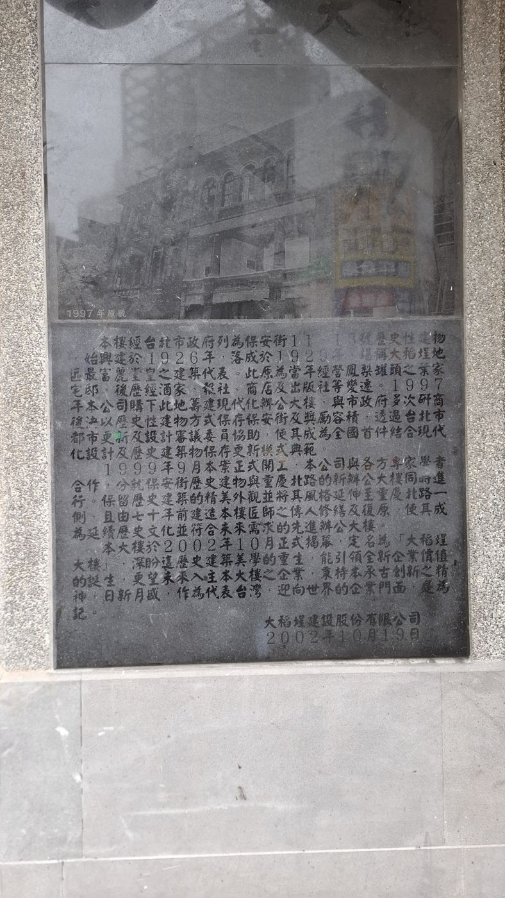
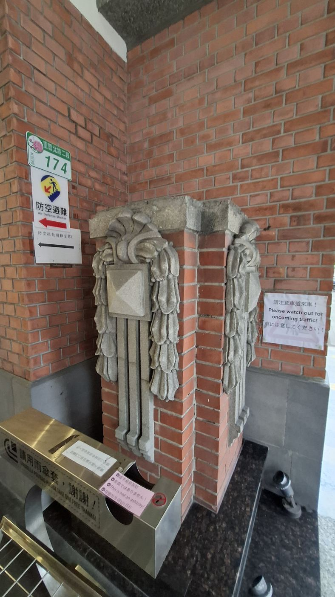
銘牌上還附有 1997 年的原貌照片。大樓 1999 年開工，一方面保存保安街立面，另一方面在重慶北路側以七十年前的建造工法與風格「延伸」出一模一樣的立面。
讀懂立面：愛奧尼克柱、蜜蜂、鳳梨，還有一個沒人解開的「TB」
對街欣賞立面｜約 14:08–14:12
老師帶大家過馬路，到對街「看全景」：
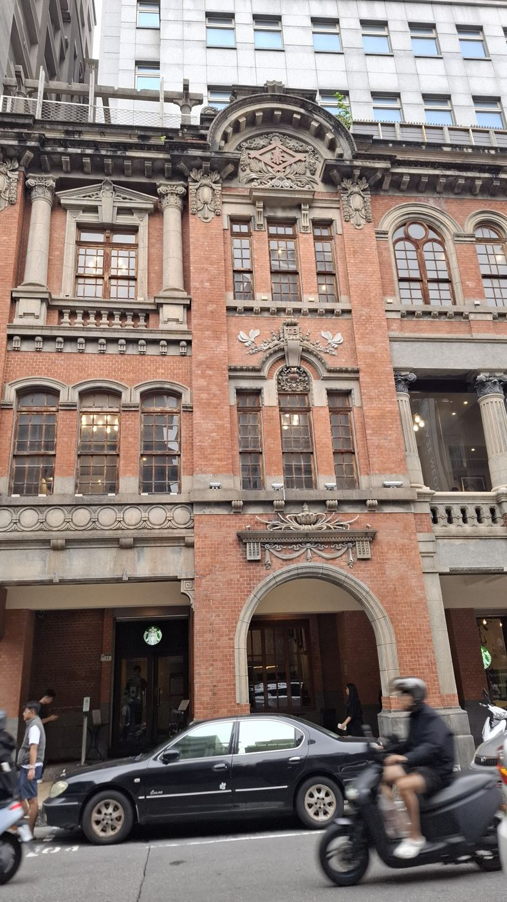
- 二樓陽台有四根希臘羅馬式的愛奧尼克柱（被認為是偏女性的柱式），原本應是可以眺望街景的空間。
- 左右對稱，頂端各有半圓形山牆，從下往上依序是拱圈、簡單裝飾。網路上常說裝飾是「蜜蜂採蜜」，和「甜」呼應。
- 鳳梨與紅色「泰」字：裝飾上能清楚看見鳳梨，上方紅色的「泰」可對應「泰芳商會」或「金泰亨商行」，不論怎麼解讀，指的都是葉金塗。
- 他其實不賣新鮮鳳梨，賣的是鳳梨罐頭；洋菇、蘆筍也都做成罐頭，是早年重要的外銷品。據簡介，他 1911 年與友人創立泰芳商會，是最早投入罐頭產業的企業之一。
罐頭標籤：雙鹿牌的故事
騎樓前｜以平板展示老標籤
罐頭是圓的，所以外銷標籤做成細長形，才能繞罐一圈。老師用平板秀出當年的標籤，讓大家近看：
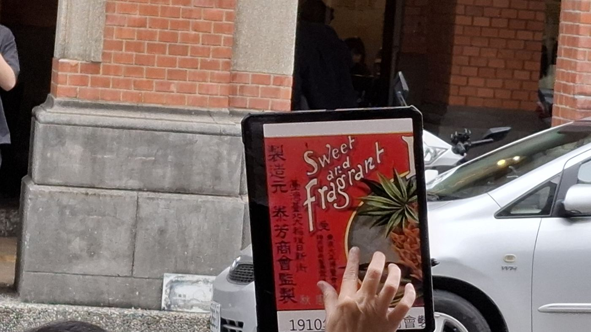
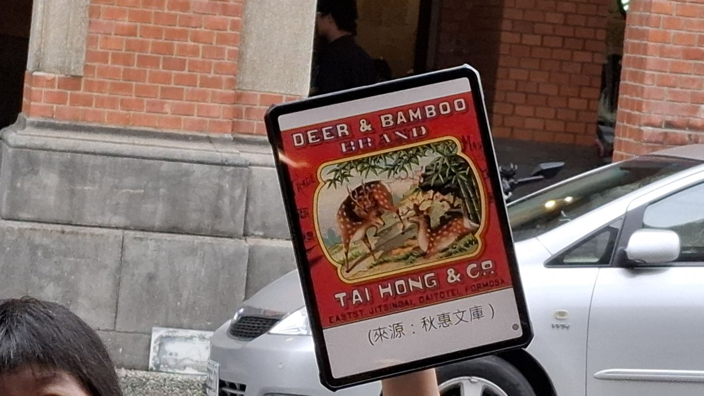
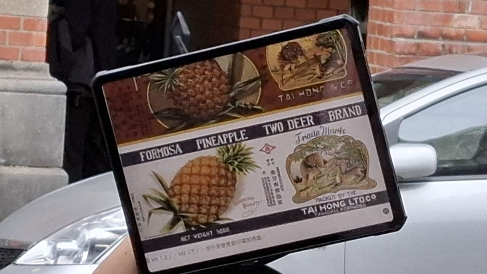
- 標籤載明「泰芳商會監製」，地址在大稻埕日新街——就在這一帶。
- 商標的兩大元素是梅花鹿與竹子，稱為「雙鹿牌」。（臺灣原本有梅花鹿，也因此成為在地象徵。）
- 不同年代標籤長得不太一樣，但鹿與竹子的元素一直延續。
1945 空照圖與屋頂花園：三層樓上的水池與涼亭
保安街轉角｜約 14:15–14:22
老師再用平板秀出 1945 年的空照圖，黃色框線就是葉金塗宅：
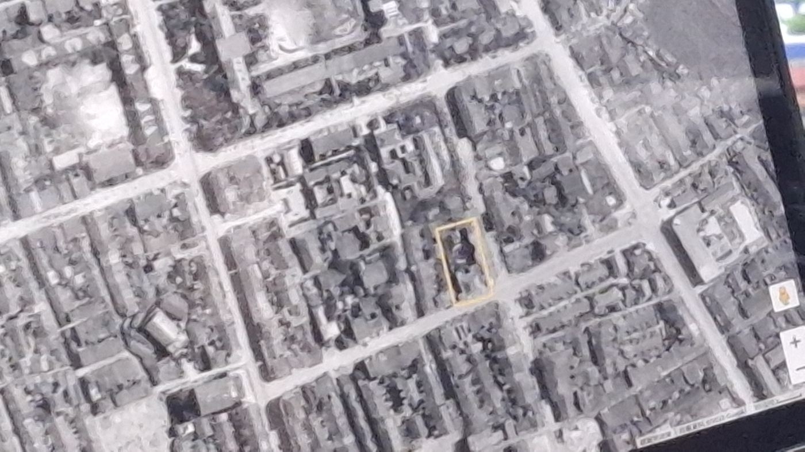
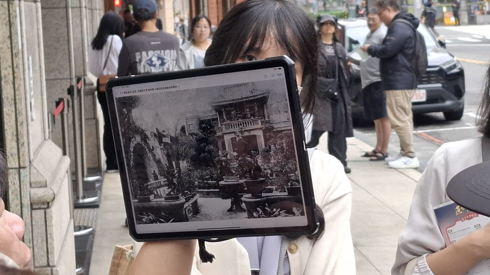
放大後可以看到建築上方有一個圓形物，其實是屋頂空中花園的水池。在 1920 年代能蓋出三層樓、面積大又有這麼多裝飾的宅邸，可見他賺了大錢。
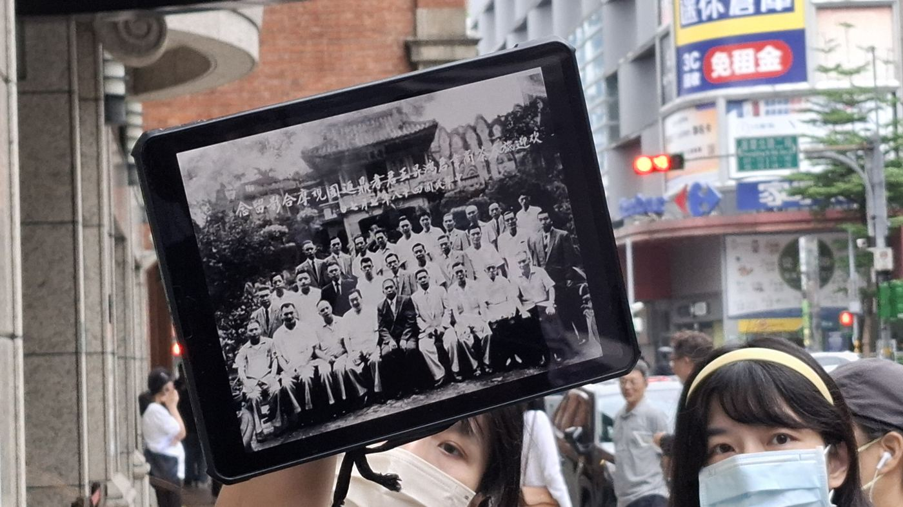
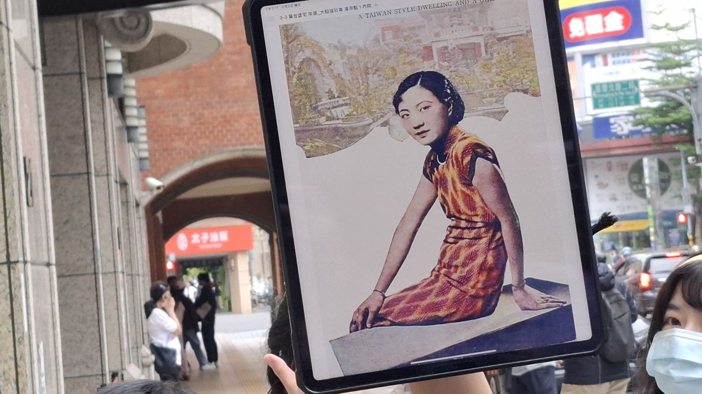
另一張合照中，賓客坐在水池前方，後面就是涼亭，證明這座花園就在屋頂。最後一張是日治時期的彩色「繪葉書」（明信片），主角雖是美人，後方背景卻是同一座涼亭。老師順帶介紹了富家子弟李火增的故事：他拿著萊卡相機到處拍，過世後家人才在遺物中找到一萬多張底片，後來整理出版成攝影集。
保安街「醫生街」與迪化街「茶行街」
保安街與甘州街口｜約 14:22–14:34
走到路口，老師介紹兩條街的暱稱：
- 保安街＝醫生街：大稻埕號稱「臺灣人的市區」，臺灣人從總督府醫學校畢業後，在醫院服務一段時間，便回到大稻埕開業，不必輪夜班，收入也較高，這條街因此診所、藥房特別多。
- 甘州街（迪化街一帶）＝茶行街：全盛時期大稻埕有兩百五十多間茶行。茶葉產季時，會有約兩萬名女工在騎樓下「揀茶」，把雜質挑出來。
- 民生西路上的新芳春茶行是過去的大型倉儲，修復後捐給臺北市政府，二樓可以買茶，也能體驗旗袍、漢服與茶席。
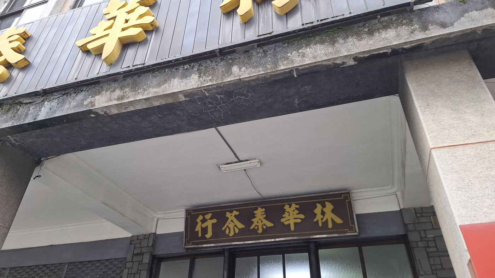
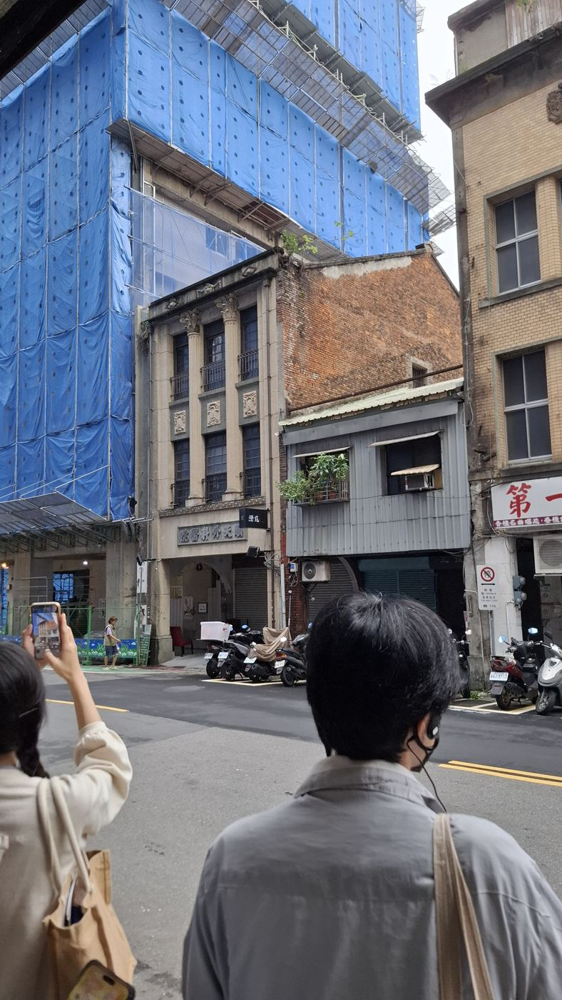
鄰近大樓的順天外科醫院（保安街 84 號）之所以不跟著大樓一起改建，是因為它本身是歷史建築。創辦人謝唐山是臺東卑南族，以第一名成績畢業於總督府醫學校，並娶了李春生的孫女李如玉，後來擔任區長、議員。
補充：立面上的水果，與遍布中南部的罐頭工廠
路口休息時間的加碼解說
老師特地從電視新聞畫面截圖，放大給大家看鳳梨旁邊還藏著哪些水果：
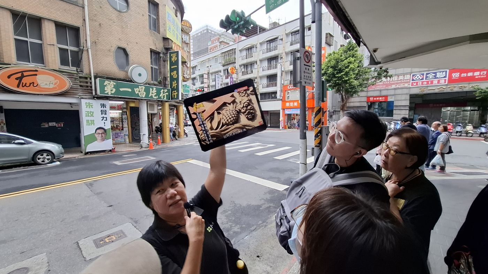
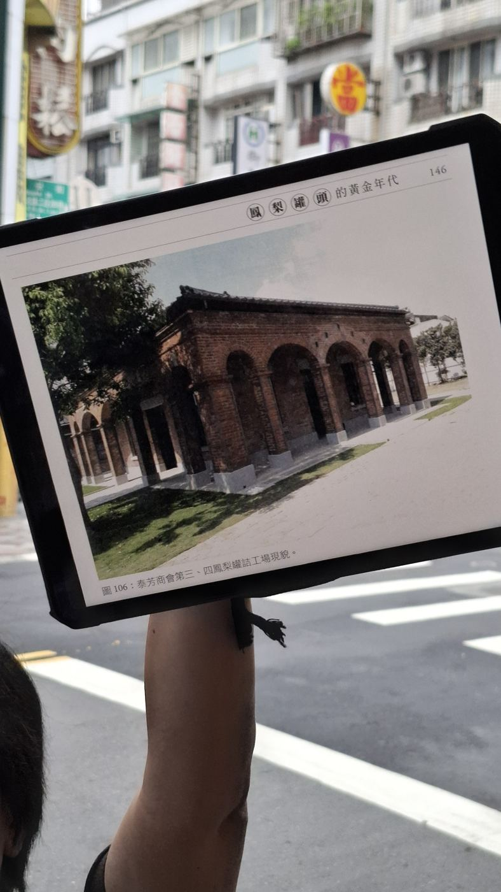
- 除了鳳梨，還有蓮霧與石榴。石榴象徵多子多孫；蓮霧在台語中另有吉祥諧音的說法。
- 北部只有一處加工廠，其餘幾座工廠在彰化員林與高雄大樹，向在地鳳梨農收購原料，因此葉金塗是「自己有加工廠」的鳳梨大王。日治時期大樹一帶罐頭工廠林立，一份清單就列出 21 間，其中兩座葉家工廠的建築至今仍保留在高雄。
- 早期罐頭廠多由日本人經營，1920 年代起才有臺灣人加入，葉金塗就是其中一位。想深入了解可讀《鳳梨罐頭的黃金年代》。
第一唱片行：七十年的鐵門與水餃
保安街｜約 14:35–14:40
往回走，右手邊是第一唱片行。老師請大家轉身，看看後方「第一企業中心」大樓所在位置——本來是 1935 年茶商為日本統治四十週年所建的第一劇場。
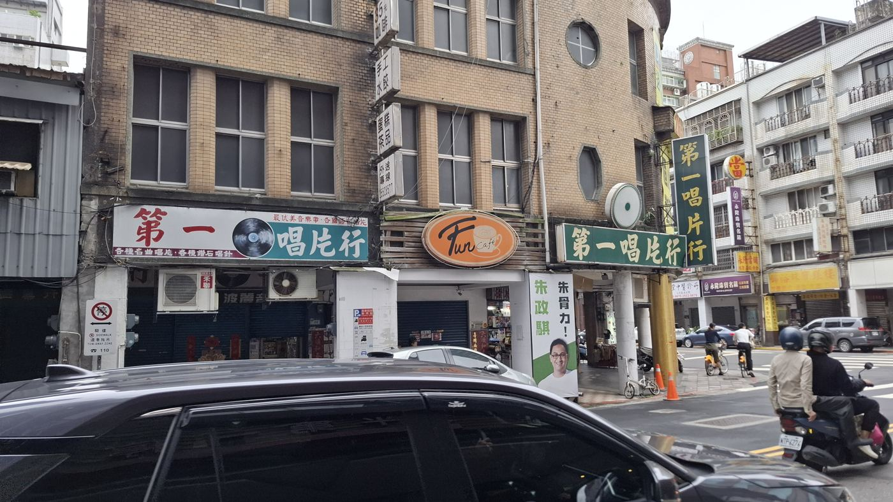
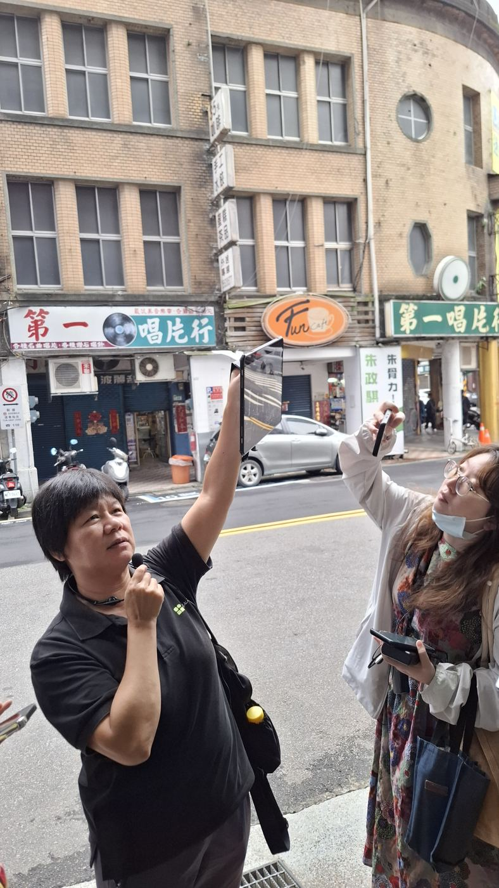
- 劇場後來遭祝融、逐漸沒落；唱片行則在戰後遷到這裡，從黑膠、錄音帶、CD 一路撐到現在。
- 現在有兩家「第一唱片」：右邊那家有創辦人照片，左邊那家由第二代李玲玲小姐（大家叫她「小玲姐」）經營，如今兼賣水餃、代售 XO 醬，生意靠的是熟客。
- 以前電影院有子夜場，客人半夜出來聽到門口喇叭播放電影主題曲，衝動買下 CD 或錄音帶，唱片行就是這樣撐過來。房子據說仍是租的，經營更辛苦。
至善堂與黃玉階：把「不纏足」帶進大稻埕
至善堂前｜約 14:40–14:50
轉過路口，二樓匾額寫著「至善堂」，並標示民國四年（1915 年）創立；現在的建築是民國 78 年改建的。至善堂原本是齋堂（齋教），重要人物是黃玉階。
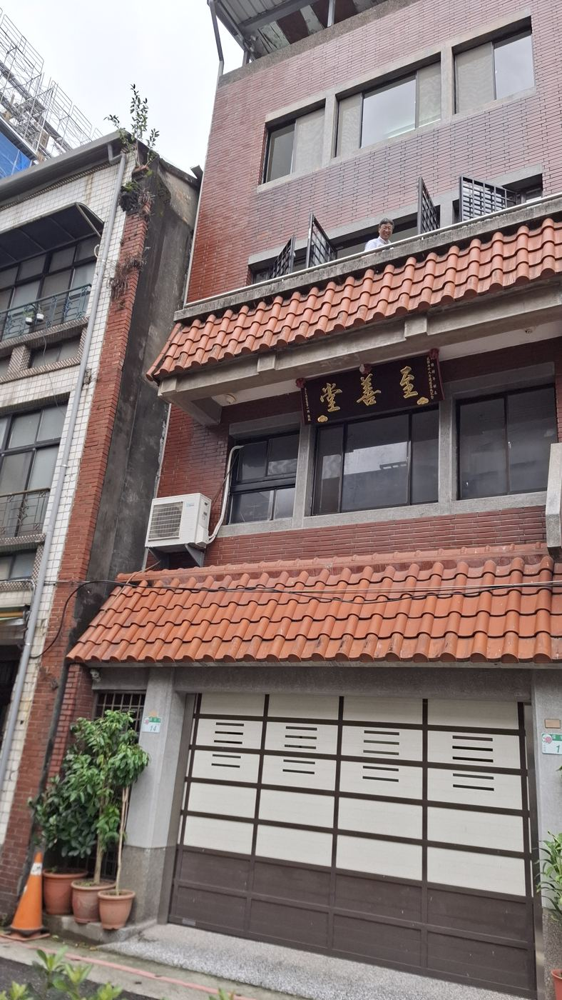
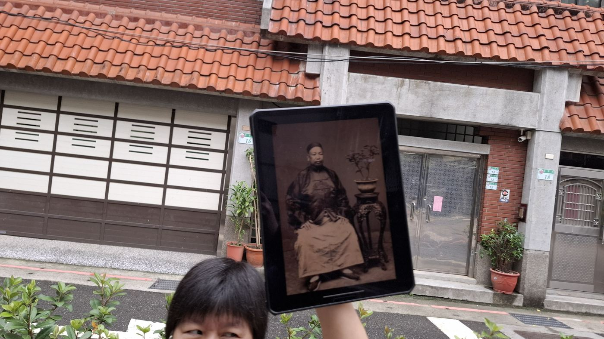
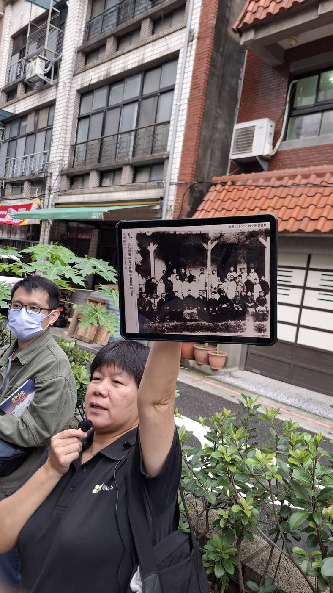
- 黃玉階是漢醫，領有日本政府發的第一號漢醫執照，並在 1900 年成立臺北天然足會，是臺灣最早的婦女解放組織之一。
- 當時女子裹小腳，腳越小象徵地位越高，講究「門當戶對」，也讓女性幾乎無法外出工作。日本人認為一半人口是女性卻關在家裡，因此邀請仕紳赴日參訪，大家看到日本女性不纏足，才受到啟發。
- 入會有約定：家中女性不再纏足，已纏足者要解纏足，娶進門的媳婦也不能纏足。解纏要循序漸進，突然解開會水腫潰爛，所以最後真正解纏的人很少，多數人只能做到「不再纏」。
- 成立大典在黃玉階講善的「普願社」舉行，出席者有總督兒玉源太郎、民政長官後藤新平與臺北廳長村上義雄。1910 年代各地女子公學校設立後，女孩也終於走得進學校。
意外嘉賓：黃玉階後人帶著文物走下樓
至善堂前｜約 14:44–14:56
老師講到一半，二樓探出頭的人竟是施老師——黃玉階的後代，也是至善堂的管理者之一。大家邀請他下樓，他還帶來了珍貴的文物：
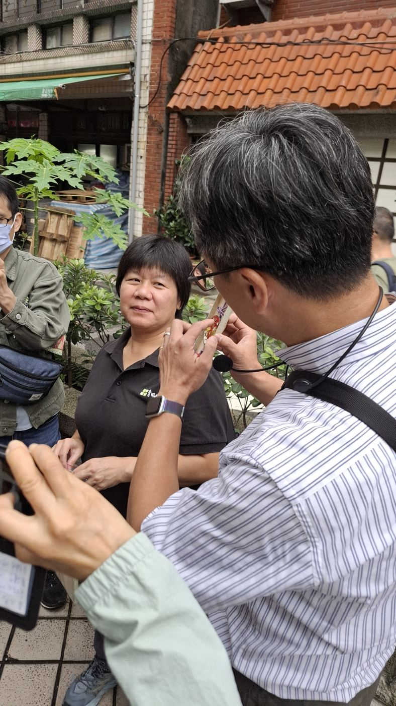
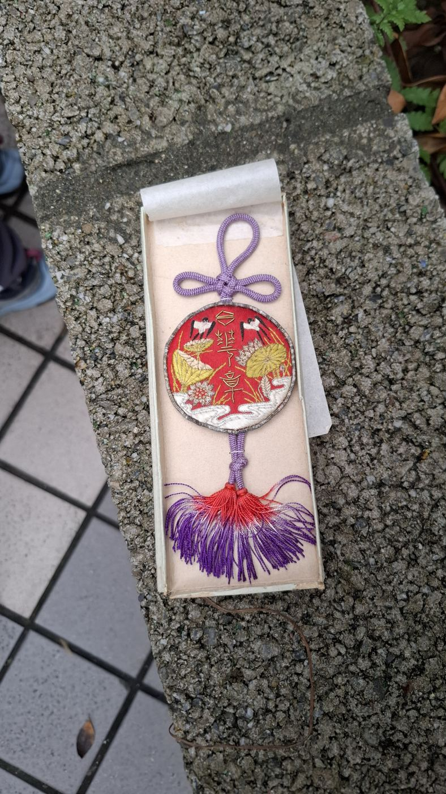
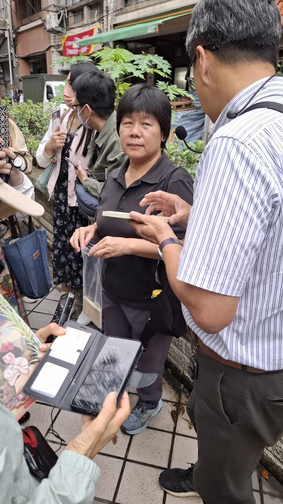
- 「華章」是頒給婦人的表彰徽章，章上有象徵臺灣總督府認證的「台」字徽，代表經官方同意發放。現存款式有紅色與青藍色兩種，另一種較少見。
- 包裝紙寫著「臺灣國語學校第二附屬學校」，表示這些徽章由學校學生手工縫製，把不纏足的觀念滲入教育體系，再由學生帶回有錢人家的家庭，勸說長輩改變觀念。
- 施老師整理遺物時，發現許多黃玉階的證件，包括日本政府核發的漢醫執照。他請中研院團隊數位化掃描，寫成論文，並拍了紀錄片；Facebook 粉絲專頁「台北至善堂」也有相關資料。
- 老師還補充：至善堂目前的展覽，主題是大稻埕周遭初等教育的發展。
慈聖宮、大稻埕教會與李春生家族的房子
慈聖宮 → 大稻埕教會｜約 14:56–15:03
時間吃緊，隊伍快步走過慈聖宮（媽祖廟）。老師簡述：它最早在民生西路靠迪化街口，也面向淡水河，日治時期為了「市區改正」開馬路而遷到現址，許多舊構件原樣搬移過來。
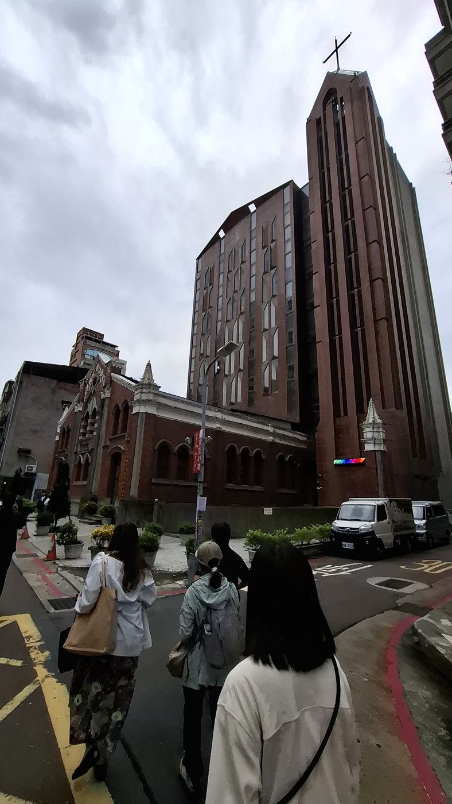
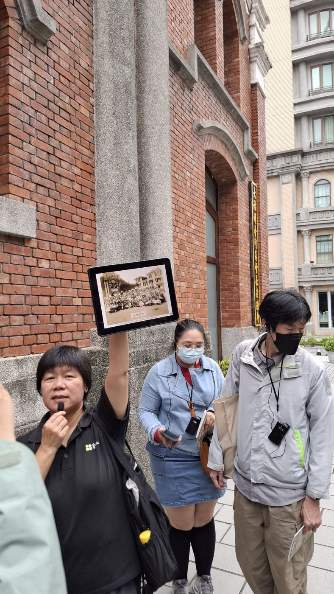
- 走到大稻埕教會前，老師請大家看對面的建築：一至三樓樣式特別，上方半圓形山牆有「李」字，這是李春生家族的房子。
- 外界常稱「李春生舊宅」，但李春生 1924 年就過世，房子 1935 年才蓋成三層，他從沒住過。
- 十多年前改建為九層樓，保留一至三樓的樣式往上加高，並把拆下的老構件收在九樓，像個小型私人博物館，可惜不對外開放。
回程路上，老師推薦巷口的加農脆：專賣手工米苔目、不加色素，夏天賣冰、冬天賣熱，已有五十年以上歷史，二十多年前才搬到現址。
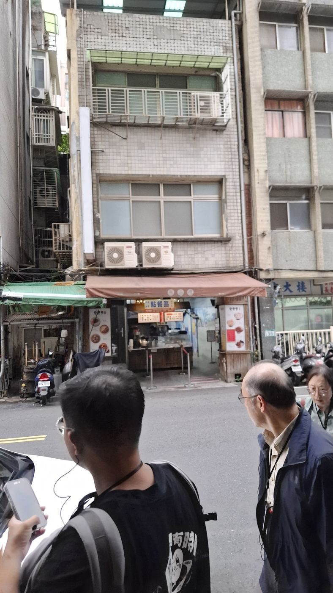
回到星巴克：蜜漬鳳梨果醬 DIY（簡述）
星巴克典藏 保安門市｜約 15:10–15:45
導覽結束後回到星巴克，由食農教育講師林昭慧帶領。因為場地不能用明火或電磁爐，鳳梨已事先蜜漬、煮好，大家把成品裝進消毒過的玻璃罐，帶著一罐約 300 克的果醬回家。
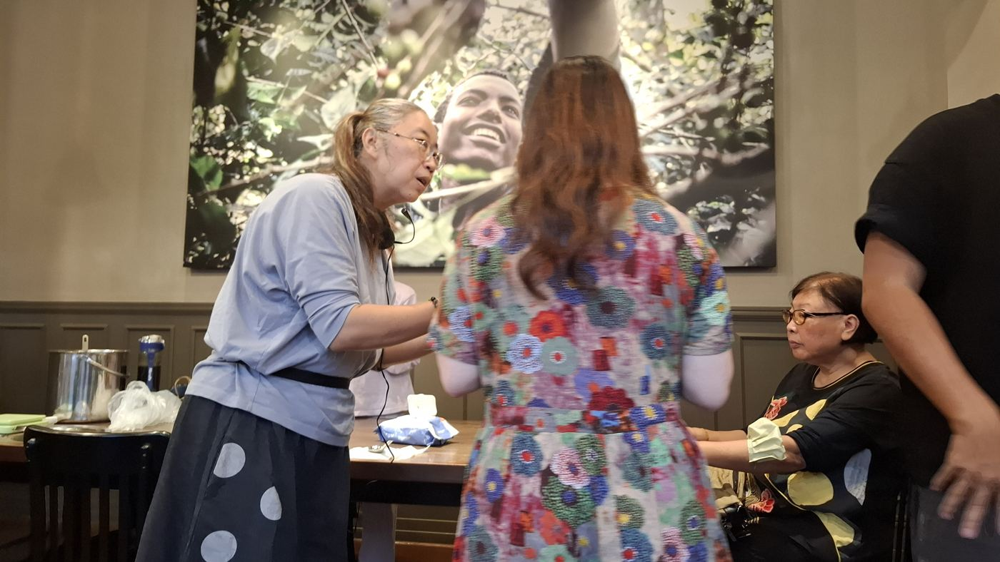
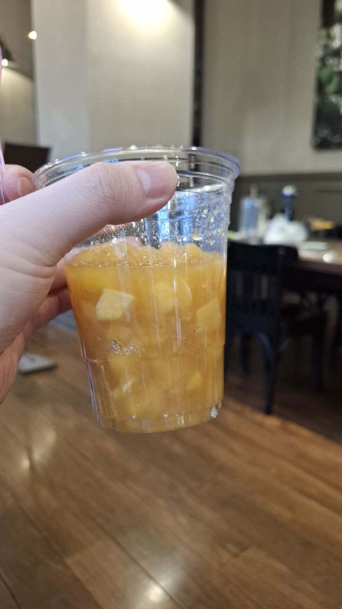
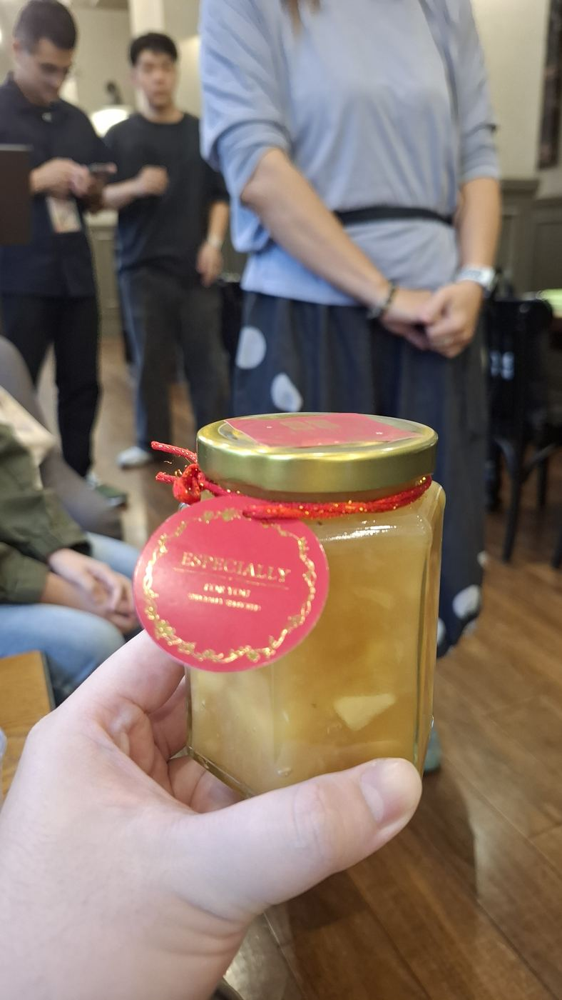
- 玻璃罐先用酒精濕紙巾消毒、風乾；不加防腐劑，冰箱冷藏最多約一個月，取用請用乾淨乾燥的湯匙。
- 配方心得：鳳梨與糖的比例約 5 公斤鳳梨配 300–500 克糖（不低於 300 克）；加入少許檸檬、海鹽、奶油、冬瓜絲讓風味更有層次，也可後段加一點蘋果醋。